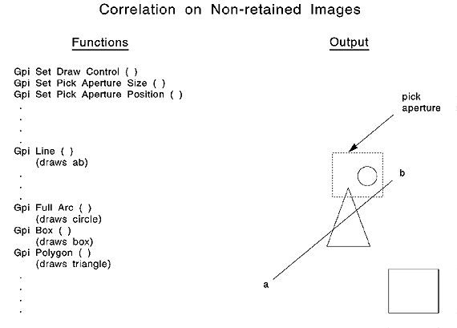

<HTML>
<HEAD>
<META HTTP-EQUIV="CONTENT-TYPE" CONTENT="TEXT/HTML; CHARSET=UTF-8">
<TITLE>Correlating Nonretained Graphics</TITLE>
</HEAD>
<BODY>
<H1>Correlating Nonretained Graphics</H1><!-- entering slot 2 -->
<P>
For the purposes of correlation,<I> nonretained graphics</I> are those graphics
that are being correlated<I> during</I> the drawing process. Nonretained
graphics can exist in nonretained graphic segments or completely outside
any segment structure. Primitives outside segments are detectable when the
applicable draw control is set.
<P>
Nonretained graphics, inside a segment bracket, can be created in either
<I>draw</I> or<I> draw-and-retain</I> modes. If created in draw-and-retain
mode, a segment, at first, is considered nonretained while the primitives
in the segment are being drawn; then it is considered retained. To be correlated,
nonretained segments must have unique, nonzero identifiers, and must be
defined as<I> detectable</I>. The primitives within these segments can be
<I>tagged</I> just as primitives in retained segments are. However, the
tags do not influence the correlation process for nonretained graphics.

<P>
To get correlation data from the drawing of nonretained graphics, three
steps must be performed- after creation of the presentation space but before
drawing the primitives:<!-- lm: 0x2 2 -->
<UL>
<P>
 <LI><LI><!-- lm: 0x2 6 -->Call<A><!-- external link: 1D 39 C4 55 --> GpiSetDrawControl
</A>to switch on the<I> correlation flag</I> (DCTL_CORRELATE, DCTL_ON).
<!-- lm: 0x2 2 -->
<P>
 <LI><LI><!-- lm: 0x2 6 -->Call<A><!-- external link: 1D 52 C4 FC --> GpiSetPickApertureSize</A>,
if necessary, to change the size of the pick aperture.<!-- lm: 0x2 2 -->
<P>
 <LI><LI><!-- lm: 0x2 6 -->Call<A><!-- external link: 1D 51 C4 FC --> GpiSetPickAperturePosition</A>,
if necessary, to explicitly position the aperture. As input to this function,
you provide the coordinate position on which the pick aperture is to be
centered, using presentation page coordinates.<!-- lm: 0x2 1 -->
</UL>
<P>
Correlation is performed for the following functions:<!-- lm: 0x2 3 -->
<UL>
<P>
<LI><!-- lm: 0x2 6 -->Individual primitive-drawing requests, for example,
<A><!-- external link: 1D 63 C3 4F -->GpiBox</A><!-- lm: 0x2 3 --> <!-- lm: 0x2 6 -->
<UL><A><!-- external link: 1D B5 C3 FC -->GpiPutData
</A><!-- lm: 0x2 3 -->
</UL><!-- lm: 0x2 6 -->
<UL><A><!-- external link: 1D 89 C3 FC -->GpiElement
</A><!-- lm: 0x2 3 -->
</UL><!-- lm: 0x2 6 -->
<UL><A><!-- external link: 1D A9 C3 FC -->GpiPlayMetaFile
</A><!-- lm: 0x2 1 -->
</UL>
<P>
Correlation is never performed for<A><!-- external link: 1D 8E C3 51 --> GpiErase
</A>
<P>
You detect correlation<I> hits</I> by examining the returned values from
the GPI functions. If<A><!-- external link: 1D 99 C3 FC --> GpiLine</A>,
for example, draws a line that intersects the pick aperture, it returns
a value of GPI_HITS to indicate a correlation hit. If the line does not
intersect the pick aperture,<A><!-- external link: 1D 99 C3 52 --> GpiLine
</A>returns a value of GPI_OK, to indicate the successful drawing of a line
without a correlation hit.<A><!-- external link: 1D 99 C3 52 --> GpiLine
</A>returns a value of GPI_ERROR if an error is detected.
<P>
If the line intersects the pick aperture, a correlation hit is returned
even if the line style is LINETYPE_INVISIBLE. For other primitives, if the
object is drawn in outline mode, a correlation hit is returned only if the
pick aperture intersects the boundary. If the object is in fill mode, a
correlation hit is returned if the pick aperture intersects or lies within
the boundary.
<P>
The following figure is an example of primitives intersecting the pick aperture.
<!-- Unable to decode bitmap format -->
<P>
Correlating Nonretained Graphics
<P>
Each GPI function whose output intersects the pick aperture returns a hit
(GPI_HIT).<A><!-- external link: 1D 63 C3 FC --> GpiBox</A>, whose output
does not intersect the pick aperture, returns GPI_OK.
<P>


<P><HR>

<A HREF="001_L2_AboutCorrelation.html">[Back: About Correlation]</A> <BR>
<A HREF="003_L3_CorrelatingRetainedG.html">[Next: Correlating Retained Graphics]</A> 
</BODY>
</HTML>
